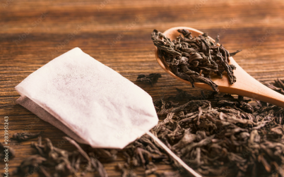

Swiper
季節限定フレーバー

3,800円(税込)
内容量 75g
季節によって変わるRoyal Tea Timeのオリジナルブレンド。
寒い季節にぴったりな紅茶の風味が強めのフレーバーを6種詰めました。
detail
寒い時期は1年で最も甘みが際立つオータムナル(秋摘み紅茶)の時期で、香りは薄く味わいの深い紅茶です。
ミルクティーにも負けない風味があるのが特徴です。
その中でも風味がしっかりしていて、初めての方でも飲みやすい6種類を詰めています。
召し上がり方
- 水
- ポット
- カップ
- 飲み方
汲みたてで空気を多く含んでいる軟水のものが紅茶向きです。お湯は沸騰直後(100℃)がベストで、ぬるかったり沸騰しすぎたお湯は香気成分がよく出ません。
鉄製は避け、陶磁器か銀製、ガラス製のポットがおすすめです。緑茶用の急須でもかまいません。鉄分を含むポットは、紅茶のタンニンと相性が悪く、香味を損なったり色味を黒くしてしまいます。
紅茶は色と香りを楽しむため内側は白く、香りが広がりやすい浅いかたちのものを選びましょう。
オータムナルは渋みがなくまろやかな味わいで、砂糖を入れずストレートで飲むことで茶葉自体の甘さを感じられます。ミルクを入れることでコクが深まるため、より一層深い味わいのミルクティーが楽しめます。
商品説明
厳選された茶葉から製造されており、お客様に安心してお楽しみいただけます。製品ごとに微妙な違いがあることをご了承ください。
一般的な成分
- 紅茶葉 : 100%
- カフェイン : 適量
- カテキン : 含有
- ポリフェノール : 含有
- フラボノイド : 含有
- アミノ酸 : 含有
製品詳細については各商品ページをご参照ください。当店の紅茶は新鮮で高品質なものをお届けするため、ご購入いただいた際に最適な保存方法についてもご案内いたします。何かご不明点がございましたらお気軽にお問い合わせください。
詳細成分
- 紅茶葉 : シリアルティーのアールグレイをベースに、上質なアッサム茶葉をブレンド
- カフェイン : 約20mg（一般的な8ozカップ当たり）
- カテキン : 適量含有
- ポリフェノール : 豊富に含まれています
- フラボノイド : アールグレイに特有の香り成分がバランスよく配合
- アミノ酸 : リラックス効果を持つテアニンが程よく含まれています
新鮮で香り高いアールグレイの体験を提供するため、製品の保存方法として湿気や直射日光を避けることをお勧めいたします。詳細については商品ラベルや取扱説明書をご参照いただくか、お気軽にお問い合わせください。